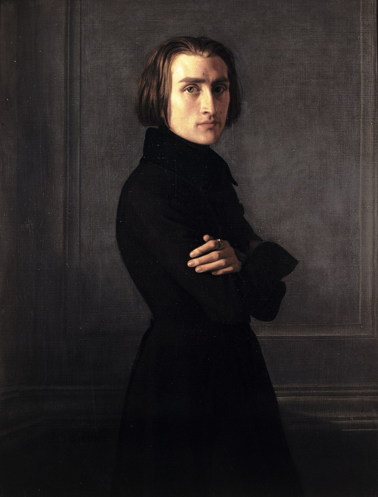

The Romantic Bach: transcription as devotion

The Romantic century loved Bach the way it loved cathedrals, and it renovated him accordingly — new vaulting, warmer light, more velvet. Its instrument of devotion was the transcription, and once you start listing the examples you realize how much of the Bach the world knows arrived in this altered form. Liszt carried the great organ preludes and fugues onto the concert piano, translating the cathedral instrument into the century's own — the machine of the virtuoso recital. Busoni's version of the Chaconne took a single violin's implied polyphony and made it explicit as full-orchestral pianism; it remains a repertoire staple, and remains an argument, since no one has ever settled whether it reveals the Chaconne's latent grandeur or replaces the violin's struggle — the very thing the piece is made of — with achieved splendor. The violinist Wilhelmj dropped the Air from the third orchestral suite onto the violin's lowest string and accidentally renamed the piece for all time. Gounod floated an Ave Maria over the C-major prelude, turning a teaching piece into a devotional aria. And at the century's far end waited Stokowski's orchestral Toccata and Fugue, Technicolor before the technology existed. Meanwhile the Passions swelled to festival choirs of hundreds, and organists cultivated the "Bach style" as sacred thunder — the mystic at the console, the building trembling.
It is easy to catalogue the distortions, and the twentieth century found it very easy indeed: scale inflated far past anything Bach's forces could have produced, textures thickened, the dance-feet under so much of this music buried under velvet. An entire performing tradition grew up around a Bach who never existed — massive, slow, upholstered, humorless. Every later movement on this arc defined itself against that portrait, which makes it tempting to treat the Romantic Bach as simply an error the twentieth century corrected.
This timeline takes the fairer reading, and it is worth stating carefully because it applies to every card in the arc. Transcription was how a century without recordings circulated music it loved. There was no other way for the sound of a great organ fugue to reach a listener a thousand miles from a great organ — but there was a piano in every prosperous parlor and a virtuoso in every concert hall, and so the arrangement became the delivery vehicle, and the distortions were the postage. The devotion underneath was entirely real, and often profound: Brahms, studying the Gesellschaft volumes as they appeared, wrote a left-hand study on the Chaconne in order — his phrase — "to feel what Bach felt," the century's greatest living contrapuntist deliberately handicapping himself to get closer to the source. Liszt's transcriptions brought organ counterpoint to audiences who would otherwise have died without hearing it. This is reception as metabolism, not vandalism: a culture absorbing a body of work through the organs it actually possessed. That the absorption changed what it absorbed is not a scandal; it is how absorption works.
In the gallery of portraits that makes up this arc — each era's Bach true, none complete — the Romantic Bach hangs first, and everything after answers it. The twentieth century rebelled in two opposite directions at once: the historians stripped the velvet to ask what the music sounded like in its own rooms, while the modernists stripped it to expose pure structure, no cathedral required. Both corrections were aimed here. So when you set a 1900s-style Matthew Passion — choir of hundreds, tempos of granite — beside Gardiner's, you are not hearing error and truth; you are hearing this card argued with, by its grandchildren. And the honest coda is that the argument never fully ended: the Busoni Chaconne is still programmed, the Air still plays at weddings under Wilhelmj's accidental name, and the Romantic Bach — devotion and distortion in the same gesture — turns out to be not a phase of reception history but a permanent resident of it.
Continue with the era essay: The Living Bach: 1850–present, or meet the first corrective: Schweitzer's Bach.
Standard transcription literature (Liszt, Busoni, Wilhelmj, Gounod editions)
→ full bibliography & links